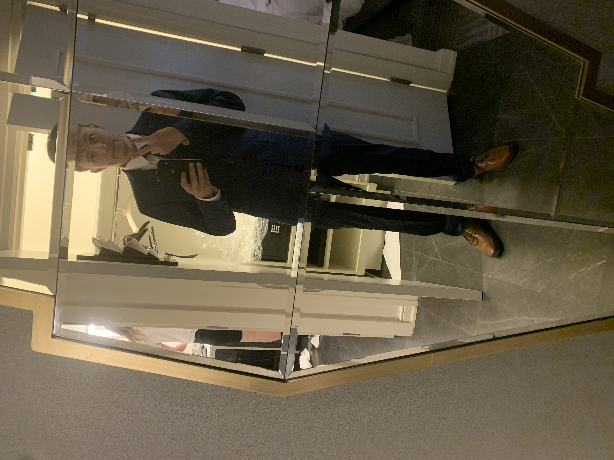

And other things that don't need to be public

My most recent photo (as you can see I don't take a lot of those)
Getting down to brass tacks, I am the youngest of 4, I have two older brother and an oldest sister, who are all wildly older than me. I grew up in a suburb of Chicago called Bartlett, it's a mid sized town that doesn't really have a lot to do in it. I went South Elgin High school, where I took my first coding class learning Javascript; almost failed the class but somehow got an A and decided that I wanted to do something computer related as a career (A lot of fun that has been).
I decided to come to MSU because my first choice, the University of Wisconsin Madison, decided to defer me, waitlist me, add me to a different "exclusive" waitlist, and then finally told me better luck next time. By contrast MSU accepted my application without much fuss, and so here I am.
I am hoping to finish college with either a computer science degree or an information science degree, and because I am a masochist, I decided to have this identity crisis my junior year, yay!
In all seriousness I enjoy attending MSU and I hope to graduate with some sort of degree, and then move to Chicago where I can hopefully land a fulfilling career.